Prey size selectivity
Gustav Delius
2022-05-25
Source:vignettes/size_selectivity.Rmd
size_selectivity.RmdIntroduction
We want to use stomach data to estimate values for the prey size selectivity in mizer models. In these notes we will first discuss the stomach data and then the mizer model before discussing the estimation task.
Stomach data
Stomach data is collected by taking samples of fish from the sea (the predators) and for each fish measuring their size (length or weight) before slicing open their stomach and recording the size of all the prey items found therein. The resulting data sets usually contain information about the time and location where the sample was taken and the species of the predator and the species of each prey item. However sometimes instead of species identity only the functional group is recorded, especially for prey items.
In these notes, for the purpose of estimating the size selectivity of the predators for their prey, we will ignore the species identity of the prey and concentrate on the species identity and size of the predator and the size of the prey. We will assume that the size information is given as weight, possibly converted from length to weight by an allometric length-weight relationship. We will denote the predator species as , the predator weight as and the prey weight as .
For illustrating the ideas in these notes, we will work with two stomach data sets. One is ICES data that was compiled for us by Murray, and here we will concentrate in particular on Cod as the predator for illustration, and the other is a data set compiled by Mariella Canales containing data about Sardine and Anchovy stomachs collected in Chile.
# Load dataset compiled by Murray, then keep only ICES data because the
# prey sizes of the DAPSTOM data are not reliable.
load("../../stomach_data/data/stomach_dataset.Rdata")
stom_df <- filter(stom_df, data == "ICES_YOTS")
# We will be concentrating on Cod as the predator species and we don't need
# all variables
murray <- stom_df |>
filter(!is.na(pred_weight_g),
prey_ind_weight_g > 0,
prey_count > 0) |>
select(pred_species, pred_weight_g, prey_ind_weight_g, prey_count) |>
group_by(pred_species) |>
filter(n() > 1000) |>
rename(w_prey = prey_ind_weight_g, w_pred = pred_weight_g, n_prey = prey_count) |>
mutate(log_ppmr = log(w_pred / w_prey),
weight_numbers = n_prey / sum(n_prey))
cod <- murray |>
filter(pred_species == "Gadus morhua")
# Load Mariella's data set
library(readr)
anchovy <- read_csv("../../stomach_data/data/AnchovyAndSardine.csv", show_col_types = FALSE) |>
filter(Species == "anchovy") |>
transmute(w_pred = wpredator,
w_prey = wprey,
n_prey = Nprey,
log_ppmr = log(wpredator / wprey))Log predator/prey mass ratio
It is useful to work with the log of the ratio of predator weight divided by prey weight, instead of with the prey weight. So we introduce a new variable Here is a scatterplot of this variable for all observations from the ICES database where the predator is cod, together with a red line representing the smoothed mean of the variable.
stomach <- cod
ggplot(stomach, aes(x = log(w_pred), y = log_ppmr)) +
geom_point() +
geom_smooth(aes(weight = n_prey), colour = "red") +
xlab("Log of predator mass [g]") +
ylab("Log of predator/prey mass ratio")## `geom_smooth()` using method = 'gam' and formula = 'y ~ s(x, bs = "cs")'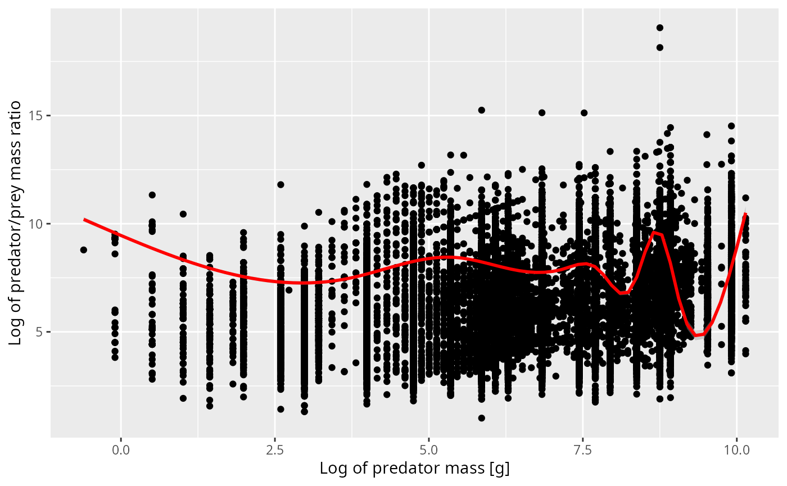
We see that for predators, often only a very much rounded value has been recorded, which leads to the vertical stripes. There are also a few suspicious observations which form diagonal stripes with a slope of 1. These arise if the prey weight is rounded, probably by taking a typical weight for the prey species rather than measuring the actual prey individual.
The curve representing the smoothed mean does not go through the centre of that scatterplot at all. That happens because there is a lot of overplotting. Therefore in the next figure we have binned the data in both the x and y direction and use colour to indicate the number of observations in each bin. Note the logarithmic scale on the count colours. Yellow bins have huge numbers of observations in them.
ggplot(stomach, aes(x = log(w_pred), y = log_ppmr)) +
stat_summary_2d(aes(z = n_prey), fun = "sum", bins = 60) +
scale_fill_viridis_c(trans = "log") +
geom_smooth(aes(weight = n_prey), colour = "red") +
xlab("Log of predator mass [g]") +
ylab("Log of predator/prey mass ratio")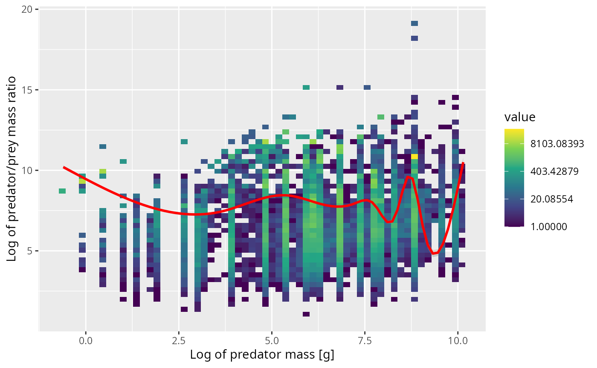
The next plot shows the same in a different way. We now work with 10 predator size classes (chosen so that each has similar number of observations in it) and for each size class show the distribution of the log of the predator/prey mass ratio as a violin plot.
stomach_binned <- stomach |>
# bin data
mutate(bin = cut_number(w_pred *
# We need to wiggle the data a bit to avoid
# duplicates which `cut_number()` does not like
rnorm(length(w_pred), 1, 0.001),
10))
ggplot(stomach_binned, aes(bin, log_ppmr)) +
geom_violin(aes(weight = n_prey),
draw_quantiles = 0.5) +
xlab("Predator weight [g]") +
ylab("Log of predator/prey mass ratio")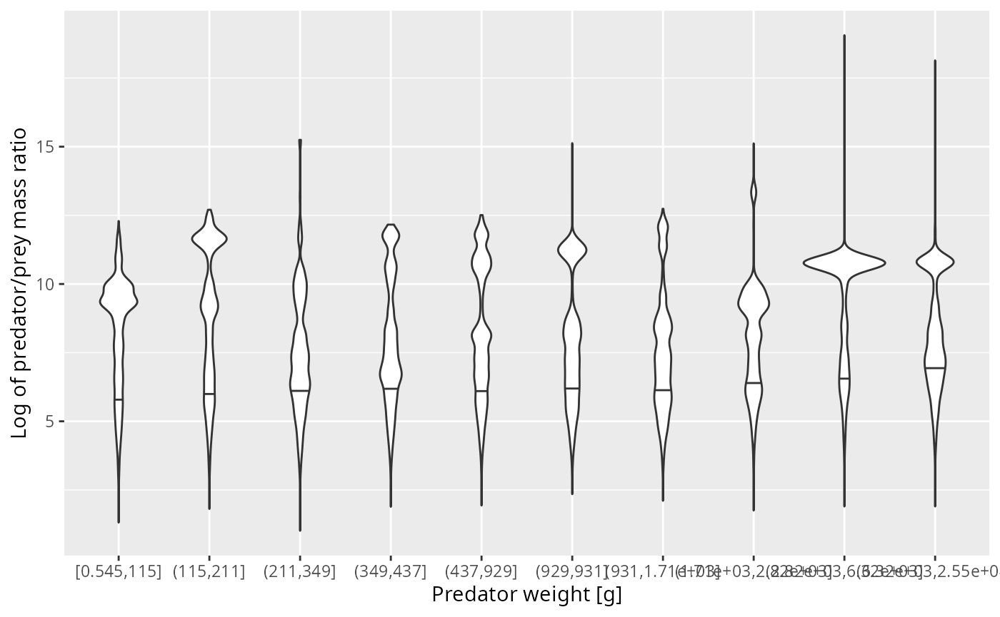
I think there is clear evidence of observational artefacts that are due to the fact that the small prey was not measured very well. If we were to average the predator/prey mass ratio over these observations, we would get too small a value due to the missing observations of the small prey.
Diet ppmr distribution
Luckily, the small prey also don’t contribute much biomass to the predator’s diet. When we are interested in the mean predator/prey mass ratio we should look at a weighted mean, where each observation is weighted by its contribution to the diet.
To get the diet from the stomach observations we need to make an assumption about the rate of digestion. It seems reasonable to make the approximation that the rate at which a prey item has its body mass digested away scales with body mass as because digestion acts on the surface of the prey item and this surface scales approximately as . Thus in order to weight each prey item according to its contribution to the predator’s diet we need to weight it by a factor of .
# Set digestion exponent
dig <- 2/3This weighting produces the following plot, where now the red line represents the smoothed weighted mean.
ggplot(cod, aes(x = log(w_pred), y = log_ppmr)) +
stat_summary_2d(aes(z = n_prey * w_prey^dig), fun = "sum", bins = 60) +
scale_fill_viridis_c(trans = "log") +
geom_smooth(aes(weight = n_prey * w_prey^dig), colour = "red") +
xlab("Log of predator mass [g]") +
ylab("Log of predator/prey mass ratio")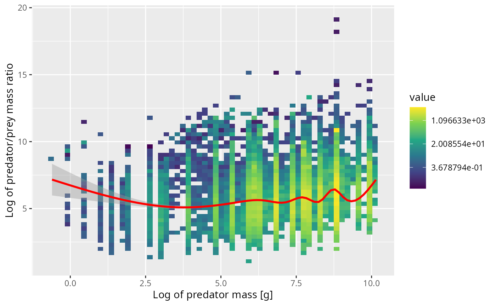
The violin plot now shows how the diet is distributed over the log ppmr for different predator size classes. These distributions look much more normal and also seem to not depend much on the predator size class.
ggplot(stomach_binned, aes(bin, log_ppmr)) +
geom_violin(aes(weight = n_prey * w_prey^dig),
draw_quantiles = 0.5) +
xlab("Predator weight [g]") +
ylab("Log of predator/prey mass ratio")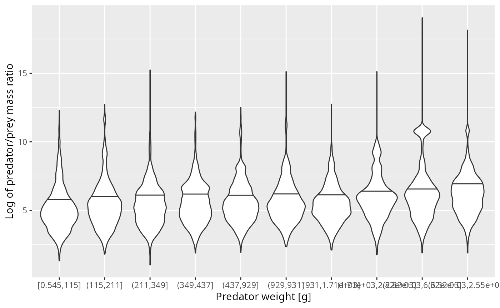
Normal distribution works for cod
Given that the distributions don’t depend strongly on the predator size class, let’s aggregate them into a single distribution and fit a normal distribution.
weighted.sd <- function(x, w) {
sqrt(sum(w * (x - weighted.mean(x, w))^2))
}
weight <- stomach$n_prey * (stomach$w_prey / stomach$w_pred)^dig
weight <- weight / sum(weight)
est_mean <- weighted.mean(stomach$log_ppmr, weight)
est_sd <- weighted.sd(stomach$log_ppmr, weight)
ggplot(stomach |> filter(log_ppmr < 12)) +
geom_density(aes(log_ppmr,
weight = n_prey * (w_prey / w_pred)^dig),
bw = 0.2) +
stat_function(fun = dnorm,
args = list(mean = est_mean,
sd = est_sd),
colour = "blue") +
xlab("Log of Predator/Prey mass ratio") +
ylab("Normalised diet density")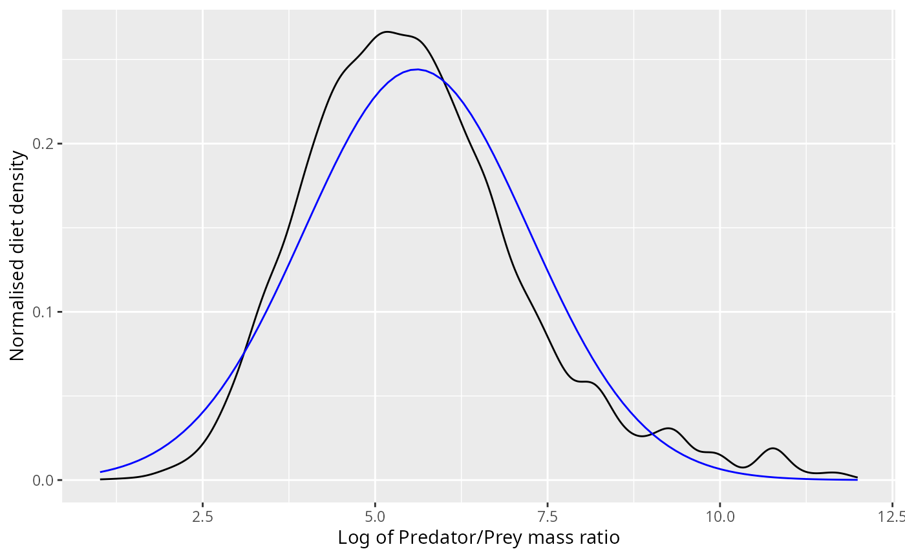
The normal distribution appears to fit the observations pretty well, even though it does not capture the skewness correctly.
Due to the nature of the normal distribution, if the diet is normally distributed with some mean and variance , then also the number of prey is normally distributed with the same variance but with a shifted mean of . The next plot shows this normal density superimposed on the observed number density.
ggplot(stomach) +
geom_density(aes(log_ppmr, weight = n_prey), bw = 0.2) +
stat_function(fun = dnorm,
args = list(mean = est_mean + dig * est_sd^2,
sd = est_sd),
colour = "blue") +
xlab("Log of Predator/Prey mass ratio") +
ylab("Normalised number density")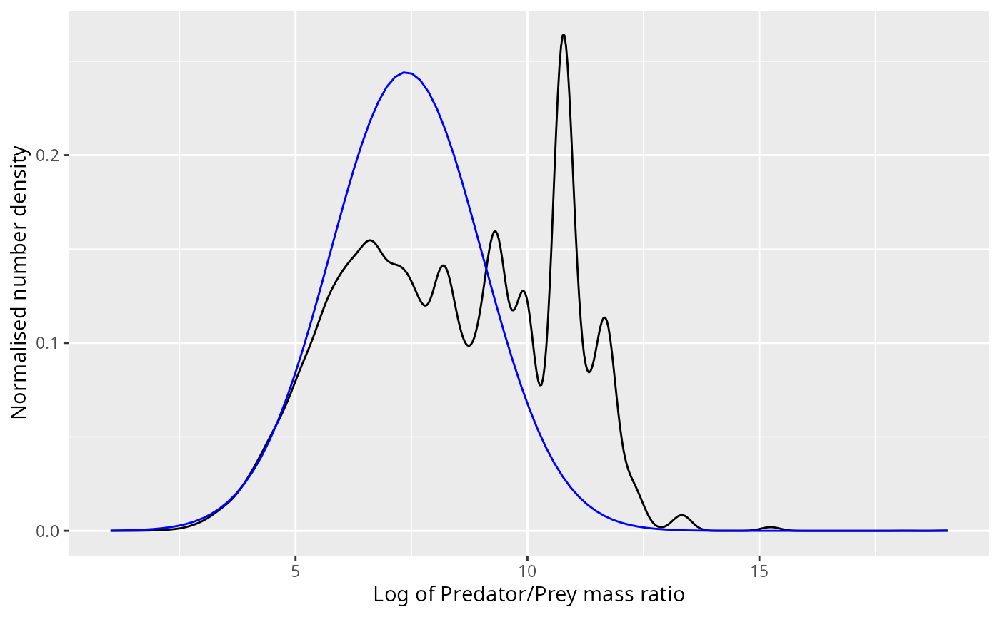
The bump at a log ppmr of around 11 that the normal distribution does not capture no longer looks so small. However, if we neglect the predation of these smaller prey items that will only have a negligible effect on the mizer model because of two lucky facts:
As we already discussed, for the growth of the predator only the biomass in its diet is relevant, and that biomass is not changed much if we neglect those small prey items.
If we neglect to model the predation on those small prey items, we are reducing the mortality imposed on the population of those small prey, but because small prey are so much more abundant, this increase in total mortality has a negligible effect on the per-capita mortality.
Fitting using both means
An alternative way to fit the normal distribution would be to choose it so that the means of both the number distribution and the diet distribution match the corresponding sample means. This means that the standard deviation of the normal distribution is chosen so that
est_mean_num <- weighted.mean(stomach$log_ppmr, stomach$n_prey)
est_sd_alt <- sqrt((est_mean_num - est_mean) / dig)
ggplot(stomach |> filter(log_ppmr < 12)) +
geom_density(aes(log_ppmr,
weight = n_prey * (w_prey / w_pred)^dig),
bw = 0.2) +
stat_function(fun = dnorm,
args = list(mean = est_mean,
sd = est_sd_alt),
colour = "blue") +
xlab("Log of Predator/Prey mass ratio") +
ylab("Normalised diet density")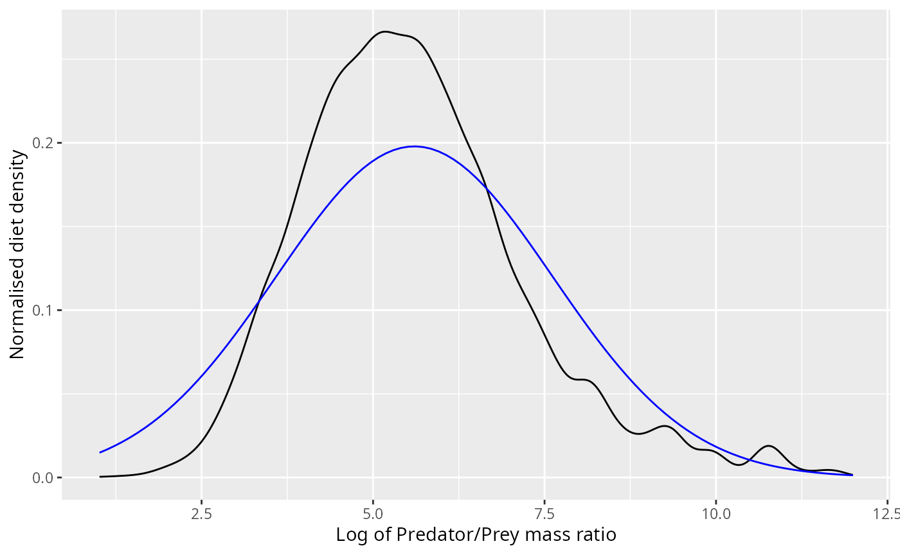
ggplot(stomach) +
geom_density(aes(log_ppmr, weight = n_prey), bw = 0.2) +
stat_function(fun = dnorm,
args = list(mean = est_mean_num,
sd = est_sd_alt),
colour = "blue") +
xlab("Log of Predator/Prey mass ratio") +
ylab("Normalised number density")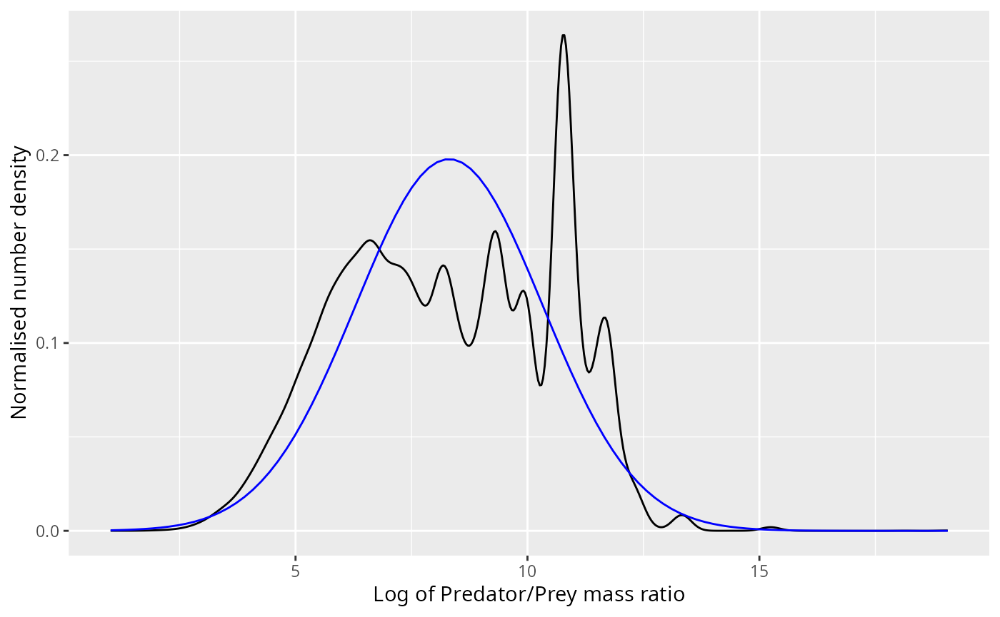
Other predator species
We can fit normal distributions to the diet of other predator species:
stomach <- murray
grid <- seq(0, max(stomach$log_ppmr), length = 100)
normaldens <- plyr::ddply(stomach, "pred_species", function(stomach) {
weight <- stomach$n_prey * (stomach$w_prey / stomach$w_pred)^dig
weight <- weight / sum(weight)
est_mean <- weighted.mean(stomach$log_ppmr, weight)
est_sd <- weighted.sd(stomach$log_ppmr, weight)
data.frame(
log_ppmr = grid,
density = dnorm(grid, est_mean, est_sd)
)
})
stomach <- stomach |>
mutate(weight_diet = (n_prey * (w_prey / w_pred)^dig) /
sum(n_prey * (w_prey / w_pred)^dig))
ggplot(stomach) +
geom_density(aes(log_ppmr, weight = weight_diet),
fill = "#00BFC4", bw = 0.5) +
facet_wrap(~pred_species, scales = "free_y", ncol = 4) +
xlab("Log of predator/prey mass ratio") +
ylab("Diet density") +
geom_line(aes(log_ppmr, density), data = normaldens,
colour = "red")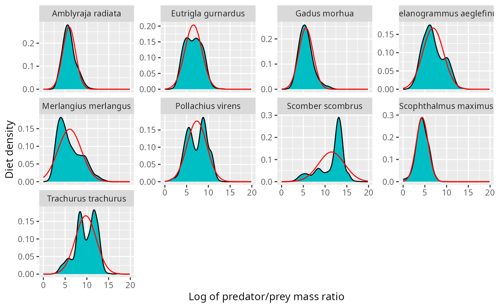
The fit does not look very good for the mackerel (scomber scombrus). This problem becomes more pronounced when we look at the corresponding number distributions.
stomach <- murray
shifted_normaldens <- plyr::ddply(stomach, "pred_species", function(stomach) {
weight <- stomach$n_prey * (stomach$w_prey / stomach$w_pred)^dig
weight <- weight / sum(weight)
est_mean <- weighted.mean(stomach$log_ppmr, weight)
est_sd <- weighted.sd(stomach$log_ppmr, weight)
data.frame(
log_ppmr = grid,
density = dnorm(grid, est_mean + dig * est_sd^2, est_sd)
)
})
ggplot(stomach) +
geom_density(aes(log_ppmr, weight = weight_numbers),
fill = "#00BFC4", bw = 0.5) +
facet_wrap(~pred_species, scales = "free_y", ncol = 4) +
xlab("Log of predator/prey mass ratio") +
ylab("Number density") +
geom_line(aes(log_ppmr, density), data = shifted_normaldens,
colour = "blue")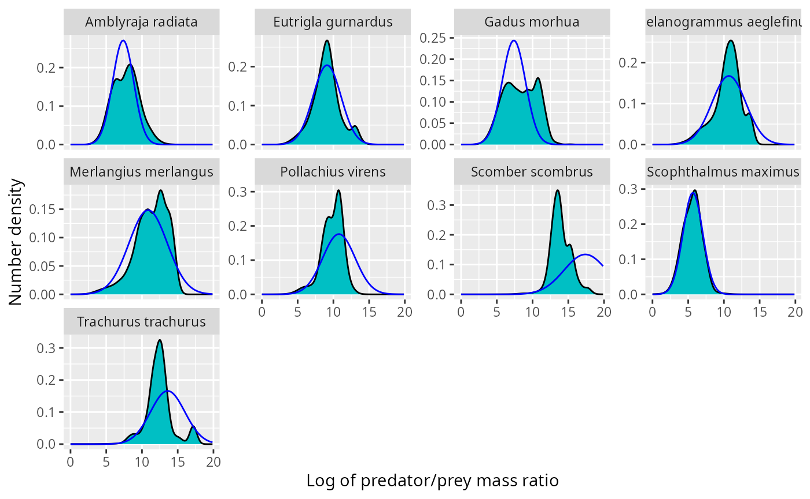
For pollock, mackerel and horse mackerel, the normal distribution is shifted to far to the right. There are various ways to fix this:Reduce the variance of the normal distribution, so that the normal number distribution is shifted less compared to the normal diet distribution.
Use the truncated exponential distribution instead of the normal distribution.
Fit a mixed effects model to the diet data, taking into account location, time, predator individual and possibly more. This will leave less residual variance and hence lead to less of a shift when going from diet distribution to number distribution.
We can visualise the same data also with histograms instead of kernel density estimates:
no_bins <- 30 # Number of bins
binsize <- (max(stomach$log_ppmr) - min(stomach$log_ppmr)) / (no_bins - 1)
breaks <- seq(min(stomach$log_ppmr) - binsize/2,
by = binsize, length.out = no_bins + 1)
binned_stomach <- stomach |>
# bin data
mutate(bin = cut(log_ppmr, breaks = breaks, right = FALSE,
labels = FALSE)) |>
group_by(pred_species, bin) |>
summarise(Numbers = sum(n_prey),
Diet = sum(n_prey * (w_prey / w_pred)^dig)) |>
# normalise
mutate(Numbers = Numbers / sum(Numbers) / binsize,
Diet = Diet / sum(Diet) / binsize) |>
# column for predator/prey size ratio
mutate(log_ppmr = breaks[bin] + binsize/2) |>
tidyr::gather(key = "Type", value = "Density", Numbers, Diet)
normaldens <- plyr::ddply(stomach, "pred_species", function(stomach) {
weight <- stomach$n_prey * (stomach$w_prey / stomach$w_pred)^dig
weight <- weight / sum(weight)
est_mean <- weighted.mean(stomach$log_ppmr, weight)
est_sd <- weighted.sd(stomach$log_ppmr, weight)
data.frame(
log_ppmr = grid,
Diet = dnorm(grid, est_mean, est_sd),
Numbers = dnorm(grid, est_mean + dig * est_sd^2, est_sd)
)
}) |>
tidyr::gather(Type, Density, Numbers, Diet)
ggplot(binned_stomach) +
geom_col(aes(log_ppmr, Density, fill = Type)) +
facet_grid(pred_species ~ Type, scales = "free_y") +
xlab("Log of predator/prey mass ratio") +
geom_line(aes(log_ppmr, Density, colour = Type), data = normaldens)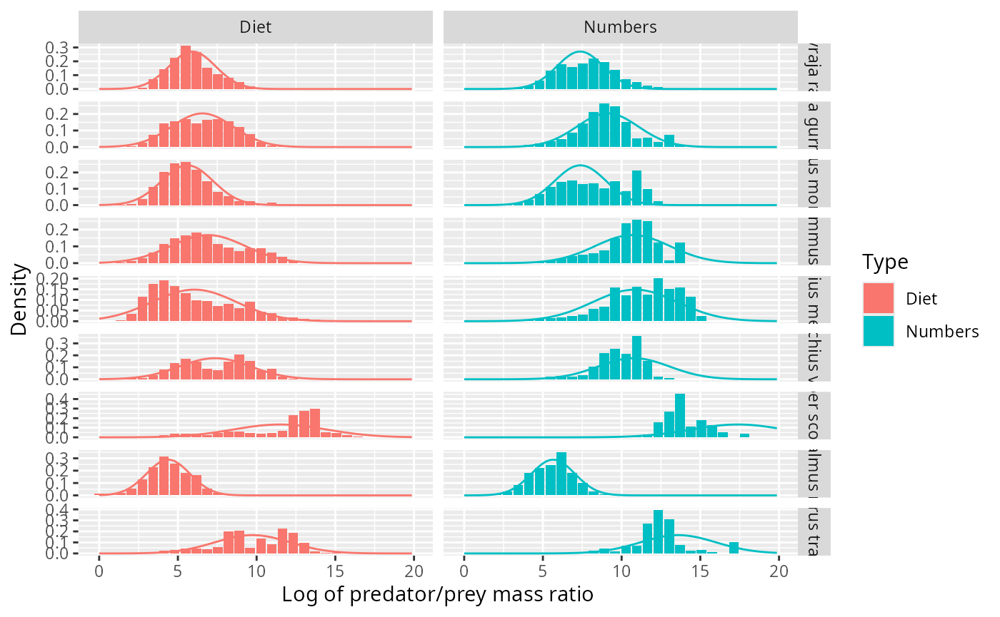